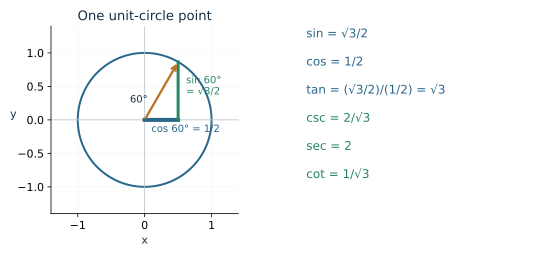
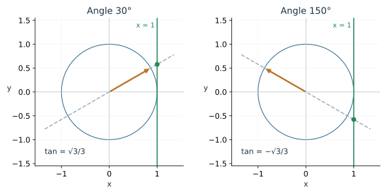
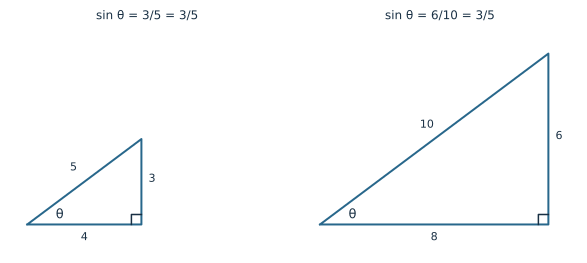
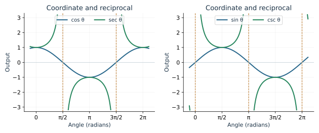
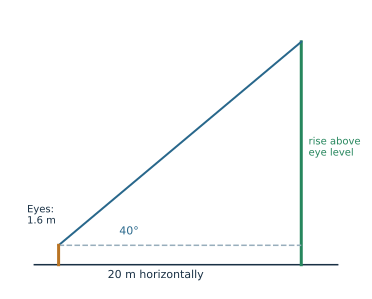

A point on a rotating wheel has a horizontal position and a vertical position. Last module we named those coordinates cosine and sine. This module asks what else the same point can tell us: the slope of its direction, the ratios of triangle sides, and the places where a division stops making sense.
The six trigonometric functions come from these connected measurements. Begin with a point or a triangle, then form the ratio the question needs.
Build six functions from two coordinates
Let \(P=(x,y)\) be the point at angle \(\theta\) on the unit circle. Its distance from the origin is 1, so \[ x=\cos\theta,\qquad y=\sin\theta. \] The other four functions use these coordinates: \[ \begin{aligned} \tan\theta&=\frac{y}{x},& \cot\theta&=\frac{x}{y},\\ \sec\theta&=\frac1x,& \csc\theta&=\frac1y. \end{aligned} \] Each quotient requires a nonzero denominator. These definitions work in every quadrant and on any coordinate axis where the needed denominator is nonzero.

Worked example: six values at one angle. At \(\theta=\pi/3=60^\circ\), the point is \((1/2,\sqrt3/2)\). Therefore \[ \begin{aligned} \sin\theta&=\frac{\sqrt3}{2},& \cos\theta&=\frac12,& \tan\theta&=\frac{\sqrt3/2}{1/2}=\sqrt3,\\ \csc\theta&=\frac{2}{\sqrt3},& \sec\theta&=2,& \cot\theta&=\frac{1}{\sqrt3}. \end{aligned} \] The exact forms \(2/\sqrt3=2\sqrt3/3\) and \(1/\sqrt3=\sqrt3/3\) are equivalent. Rationalizing a denominator changes the form, while preserving the value.
Secant and cosecant are the reciprocals of cosine and sine. Cotangent equals \(1/\tan\theta\) whenever both expressions are defined. For its full domain, use \(\cot\theta=\cos\theta/\sin\theta\): at \(90^\circ\), cotangent is zero even though tangent is undefined.
Use the Six-Function Explorer to compare the values with the point’s coordinates. Predict the signs before reading the outputs.
Tangent measures the slope of a direction
For a line through the origin and \(P=(\cos\theta,\sin\theta)\), slope is rise divided by run: \[ m=\frac{\sin\theta}{\cos\theta}=\tan\theta. \] The same line meets the vertical line \(x=1\) at \((1,\tan\theta)\), provided cosine is nonzero. This is a useful picture of tangent as a signed height.

In Quadrants II and III, the terminal ray points left, so we extend its line backward to reach \(x=1\). Keeping the whole line visible explains the tangent construction in those quadrants.
At \(30^\circ\), the slope is \((1/2)/(\sqrt3/2)=1/\sqrt3\). At \(60^\circ\), it is \(\sqrt3\). A direction closer to vertical has a larger positive slope in this first-quadrant comparison.
As \(\theta\) approaches \(90^\circ\) from below, sine approaches 1 while cosine approaches zero through positive values. Dividing by that small positive number makes tangent large. At exactly \(90^\circ\), the line is vertical and the quotient is undefined.
Recover the familiar right-triangle ratios
Consider a right triangle with an acute angle \(\theta\), opposite side \(o\), adjacent leg \(a\), and hypotenuse \(h\). Scale every side by \(1/h\). The hypotenuse becomes 1, and the other two sides become \(a/h\) and \(o/h\), the coordinates of a unit-circle point.

It follows that \[ \sin\theta=\frac{o}{h},\qquad \cos\theta=\frac{a}{h},\qquad \tan\theta=\frac{o}{a}. \] Their reciprocal ratios are \(\csc\theta=h/o\), \(\sec\theta=h/a\), and \(\cot\theta=a/o\). Opposite and adjacent depend on which acute angle you choose. The hypotenuse always faces the right angle.
Worked example: a support cable. A cable is 13 m long and reaches a point 12 m above level ground. Its horizontal run is \(\sqrt{13^2-12^2}=5\) m. For the angle with the ground, \[ \sin\theta=\frac{12}{13},\quad \cos\theta=\frac5{13},\quad \tan\theta=\frac{12}{5}. \] The reciprocal ratios are \(13/12,13/5,5/12\), respectively. Each compares two lengths from the same triangle.
Try it. A right triangle has legs 5 and 12. Choose the angle opposite the side of length 5. Find the hypotenuse and all six ratios.
Exact values come from two special triangles
An equilateral triangle of side 2 splits into two right triangles with sides \(1,\sqrt3,2\). This gives the \(30^\circ\) and \(60^\circ\) values. A right triangle with equal legs 1 has hypotenuse \(\sqrt2\), giving the \(45^\circ\) values.
| Angle | \(\sin\theta\) | \(\cos\theta\) | \(\tan\theta\) |
|---|---|---|---|
| \(30^\circ=\pi/6\) | \(1/2\) | \(\sqrt3/2\) | \(\sqrt3/3\) |
| \(45^\circ=\pi/4\) | \(\sqrt2/2\) | \(\sqrt2/2\) | \(1\) |
| \(60^\circ=\pi/3\) | \(\sqrt3/2\) | \(1/2\) | \(\sqrt3\) |
For an angle in another quadrant, use its reference angle to find the coordinate magnitudes, then assign signs from the point’s location.
Worked example: a third-quadrant angle. For \(5\pi/4=225^\circ\), the reference angle is \(\pi/4\). The point lies left of the origin and below it: \[ (\cos\theta,\sin\theta)= \left(-\frac{\sqrt2}{2},-\frac{\sqrt2}{2}\right). \] Thus \(\tan\theta=\cot\theta=1\), while \(\sec\theta=\csc\theta=-\sqrt2\). The two negatives cancel in the quotients.
Use signs rather than a separate rule for each function
Cosine follows the horizontal coordinate; sine follows the vertical coordinate. Their reciprocals keep those signs. Tangent and cotangent are positive when the coordinate signs agree and negative when they differ.
| Quadrant | Coordinate signs \((x,y)\) | Positive functions |
|---|---|---|
| I | \((+,+)\) | All six |
| II | \((-,+)\) | Sine and cosecant |
| III | \((-,-)\) | Tangent and cotangent |
| IV | \((+,-)\) | Cosine and secant |
For \(150^\circ\), the reference angle is \(30^\circ\), so the point is \((-\sqrt3/2,1/2)\). For example, \(\tan150^\circ=-1/\sqrt3\) and \(\csc150^\circ=2\).
Try it. Suppose \(\cos\theta=3/5\), with \(\theta\) in Quadrant IV. Use \(x^2+y^2=1\) to find sine, then find the other four functions.
Separate zero from undefined
A quotient is zero when its numerator is zero and its denominator is nonzero. It is undefined when its denominator is zero. These situations occur at different places on the circle.
At \(90^\circ\), the point is \((0,1)\). Therefore sine is 1 and cosine is 0; tangent and secant are undefined because they divide by cosine. Cotangent is \(0/1=0\), and cosecant is 1.
At \(180^\circ\), the point is \((-1,0)\). Now sine is 0 and cosine is \(-1\); cotangent and cosecant are undefined, tangent is 0, and secant is \(-1\).
In radians, cosine vanishes at \(\pi/2+k\pi\), so tangent and secant exclude those inputs. Sine vanishes at \(k\pi\), so cotangent and cosecant exclude those inputs. Here \(k\) is any integer.
Try it. Find all six values at \(3\pi/2\). For each undefined value, name its denominator.
Read graphs of coordinates and reciprocals
The horizontal axis of a trig graph represents angle; its vertical axis represents a function value. This graph records a measurement from the rotating point, rather than its circular path.
Sine and cosine stay in \([-1,1]\) and repeat after \(2\pi\). Secant and cosecant have the same full-turn periods as their reciprocal partners. Their values lie in \((-\infty,-1]\cup[1,\infty)\), since reciprocating a nonzero number of magnitude at most 1 produces a magnitude at least 1.

Near \(\pi/2\), cosine approaches zero from above on the left and below on the right. Secant therefore grows positively on one side and negatively on the other. Its graph has a vertical asymptote there. The two branches remain separated.
Tangent and cotangent repeat after \(\pi\). A half-turn negates both coordinates, preserving their quotient: \[ \tan(\theta+\pi)= \frac{-\sin\theta}{-\cos\theta}=\tan\theta \] where the denominator is nonzero. Tangent has zeros at \(k\pi\); cotangent has zeros at \(\pi/2+k\pi\).
Use the Six Trigonometric Graphs Explorer and the Reciprocal Graphs Explorer to compare periods, zeros, and excluded inputs. Follow the denominator when a graph breaks.
Choose a ratio for a measurement
Draw the physical situation and identify which side is known. A horizontal distance and an elevation angle suggest tangent; a line-of-sight distance and angle suggest sine for a height.

Worked example: a tree measured from eye level. An observer stands 20 m horizontally from a tree and measures a \(40^\circ\) elevation angle. The observer’s eyes are 1.6 m above the level ground. First find the rise above eye level: \[ \frac{h_{\text{rise}}}{20}=\tan40^\circ, \qquad h_{\text{rise}}\approx16.8\text{ m}. \] Adding the eye height gives a tree height of about \(18.4\) m. Use degree mode for this calculation and round at the end.
When the angle is unknown but a ratio is known, a calculator’s inverse trig function can recover an acute angle. For a ramp rising 1.5 m over 6 m horizontally, \(\theta=\arctan(1.5/6)\approx14.0^\circ\). Module 4 will examine why inverse functions choose particular angles.
Review exercises
- At \(2\pi/3\), find all six functions exactly.
- At \(7\pi/4\), find tangent, cotangent, secant, and cosecant.
- Explain geometrically why \(\tan(\pi/2)\) is undefined.
- For which angles in \([0,2\pi)\) is cosecant undefined?
- For legs 5 and 12, find all ratios for the angle opposite the side of length 5.
- A ladder reaches 8 m high with its foot 3 m from a wall. Find the angle with the ground.
- A drone has elevation angle \(28^\circ\) and horizontal distance 75 m from an observer at ground level. Estimate its altitude.
- Divide \(\sin^2\theta+\cos^2\theta=1\) by \(\cos^2\theta\) and simplify. State the restriction.
- Find all six exact values at \(11\pi/6\).
- Describe the zeros and asymptotes of tangent on \([-2\pi,2\pi]\).
- Sketch one period of secant, labeling its asymptotes and its closest values to zero.
- Explain why neither secant nor cosecant can equal \(1/2\).
- If \(\cos\theta=-12/13\) in Quadrant II, find all the other values.
- Explain why tangent repeats after a half-turn.
- For the point \((0,-1)\), identify its angle in \([0,2\pi)\) and every zero or undefined function.
Check your understanding
For the 5–12 triangle, the hypotenuse is 13 and the ratios are \(\sin=5/13,\cos=12/13,\tan=5/12,\csc=13/5,\sec=13/12,\cot=12/5\).
In the Quadrant IV problem, sine is \(-4/5\), tangent \(-4/3\), cosecant \(-5/4\), secant \(5/3\), and cotangent \(-3/4\).
At \(3\pi/2\), sine is \(-1\), cosine 0, cosecant \(-1\), and cotangent 0. Tangent and secant are undefined because cosine is zero.